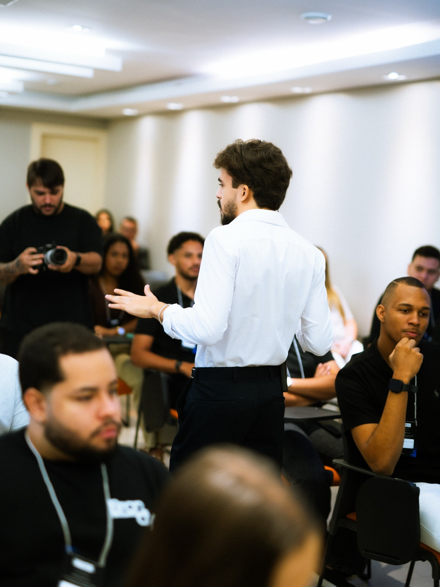
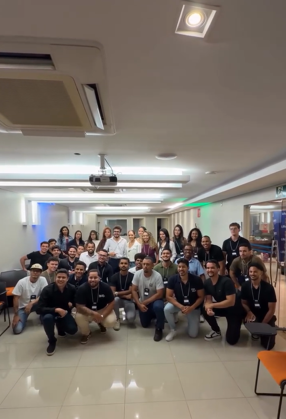

O mercado de audiovisual mobile
Entenda como empresas e profissionais usam vídeos para divulgar seus negócios e onde você pode encontrar oportunidades nesse mercado.
Sem precisar de câmera profissional, sem equipamentos caros e sem experiência.
Todos os dias, empresas, profissionais e negócios precisam de vídeos para divulgar seus produtos, atrair clientes e fortalecer sua presença nas redes sociais.
E essa demanda abriu espaço para uma nova geração de profissionais: pessoas capazes de produzir vídeos de qualidade usando o próprio celular.
O problema é que a maioria das pessoas que quer entrar nesse mercado começa pelo lugar errado.
Compra equipamento.
Aprende a editar.
Passa horas vendo tutoriais.
Mas continua sem saber o principal:
Como transformar essa habilidade em dinheiro.
Como encontrar os primeiros clientes.
Quanto cobrar.
O que oferecer.
E como transformar trabalhos pontuais em uma renda recorrente.
É justamente essa virada que você vai aprender na Masterclass.

Um evento presencial totalmente focado em te mostrar como sair do zero e transformar o seu celular em uma ferramenta profissional para produzir vídeos e começar a ganhar dinheiro com isso.
Durante um dia inteiro, você vai aprender, na prática, como funciona o mercado de audiovisual mobile e o caminho para transformar essa habilidade em um serviço que empresas e profissionais estão dispostos a pagar.
Não é apenas sobre aprender a gravar vídeos.
É sobre aprender a transformar uma habilidade em uma oportunidade profissional.
Entenda como empresas e profissionais usam vídeos para divulgar seus negócios e onde você pode encontrar oportunidades nesse mercado.
Como conseguir seus primeiros clientes mesmo começando do zero e sem portfólio.
Onde buscar clientes e como abordá-los para aumentar suas chances de conseguir uma resposta.
Como precificar seus vídeos e montar seus serviços sem medo de cobrar barato ou caro demais.
Como gravar vídeos profissionais com o celular, na prática e sem enrolação.
Como transformar trabalhos pontuais em clientes recorrentes e construir uma renda mensal com audiovisual mobile.
A Masterclass acontecerá em duas turmas presenciais, nos dias 23 e 30 de outubro. O conteúdo será exatamente o mesmo nas duas datas. Ao adquirir seu ingresso, você poderá escolher qual dos dois dias é melhor para você participar.
Credenciamento, recepção e preparação para o início da Masterclass.
Conteúdo e atividades práticas.
Continuação do conteúdo e aplicação prática.
Momento aberto para tirar suas dúvidas diretamente com o Kauan.
Durante a Masterclass, você estará em uma sala com outras pessoas que também querem entrar ou crescer no mercado de audiovisual mobile.
Você poderá acompanhar o conteúdo presencialmente, tirar suas dúvidas, participar das atividades e entender na prática como transformar o celular em uma ferramenta de trabalho.
Você não vai apenas assistir.
Você vai viver a experiência.

Videomaker e produtor audiovisual
Kauan Lisboa atua na criação de conteúdo para empresários, artistas e eventos de grande visibilidade.
Ao longo dos últimos anos, participou de produções envolvendo nomes como Felipe Titto, Zé Felipe, Gustavo Mioto, Pablo Marçal e Gustavo Tubarão, além de eventos como Rancho do Maia, Leilão Neymar Jr. e Galácticos Open.
Seu trabalho é focado em utilizar o audiovisual como ferramenta de posicionamento, autoridade e presença digital, produzindo conteúdos que ajudam pessoas e marcas a se destacarem no ambiente digital.
Agora, ele vai colocar essa experiência em prática na Masterclass para mostrar, de forma presencial, como você pode começar a utilizar o seu próprio celular para entrar nesse mercado.
Você recebe:
De R$ 997
Por apenas
6x de R$ 46,34
ou R$ 247 à vista
QUERO GARANTIR A MINHA VAGA ↗Escolha sua data para participar no ingresso.
Para garantir uma experiência presencial com espaço adequado para todos os participantes, o número de vagas é limitado.
Você pode escolher entre:
As duas turmas terão exatamente o mesmo conteúdo.
Escolha a data que melhor funciona para você.
GARANTIR MEU INGRESSO ↗Em um único dia, você vai entender como funciona o mercado de audiovisual mobile, como transformar essa habilidade em um serviço e quais passos seguir para começar a buscar seus primeiros clientes.
Escolha sua data e participe da Masterclass.
23/10 ou 30/10
Montes Claros — MG
8h às 17h